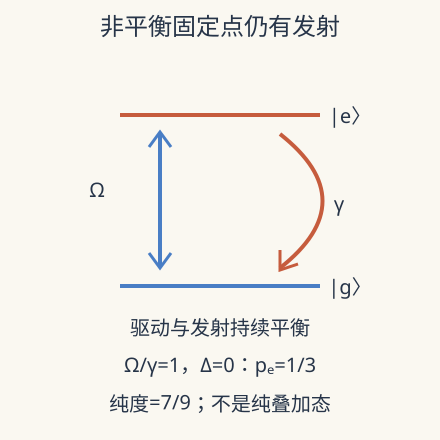

本页目录
强关联与非平衡 IV · 驱动开放系统：稳态不是停止运动
先修：热化与退相位、退相干。本讲从一个驱动两能级系统推导非平衡固定点，再走向多体耗散与 Floquet 预热化。先修链接中的约定若不同，以本讲显式定义为准。
激光一直输入能量，原子却能保持不变的平均状态吗？
1. 环境使问题从态向量变成密度矩阵
上一讲的孤立纯态只转动相位。现在一个两能级系统吸收相干驱动，同时向环境发射能量。我们保留系统密度矩阵 \(\rho\)，把环境影响压缩成主方程。这需要环境相关时间短、耦合和频率近似合适等物理条件，不能把任意有记忆的噪声直接塞进同一个常数衰减率。
在驱动旋转坐标中、旋波近似下，令
基底顺序为 \((|e\rangle,|g\rangle)\)，\(\sigma_z=|e\rangle\langle e|-|g\rangle\langle g|\)。\(\Omega\) 是 Rabi 角频率，\(\Delta\) 是按此 Hamiltonian 定义的失谐，\(\gamma>0\) 是自发衰减率，都用每秒表示。模型只含向下跃迁，没有额外纯退相位或热激发。
跳跃项把激发态人口送到基态，反对易项使总迹守恒并衰减相干。只保留前一项会让概率凭空增加。Lindblad 结构保证在其数学条件下产生完全正的动力学；“完全正”要求系统连着任意辅助系统时仍不产生负概率。
2. 三条实方程怎样容纳振荡与衰减
写 \(\rho=(I+x\sigma_x+y\sigma_y+z\sigma_z)/2\)。由对易关系及矩阵相乘得到
\(x,y\) 是相干分量，\(z\) 是人口差。没有驱动时，\(z+1\) 以率 \(\gamma\) 衰减，而相干以率 \(\gamma/2\) 衰减，所以此模型的 \(T_2=2T_1\)。加入纯退相位后这个等式失效；不能把它当作所有量子比特的恒等式。
对纯相干演化，Bloch 向量绕有效场转动；耗散同时把它拉向基态。两种运动平衡后可以有非零相干与固定人口。“稳态”指密度矩阵不随旋转坐标时间变化，不表示微观发射事件停止。

3. 不用求全部时间演化也能找到固定点
令三条导数为零。第一式给 \(x=-2\Delta y/\gamma\)，第三式给 \(z=\Omega y/\gamma-1\)，代入第二式便得到
因此激发态人口为
弱驱动时激发概率与 \(\Omega^2\) 成正比；共振强驱动时趋于 \(1/2\)，不是 1。相干驱动既能吸收也能受激发射，单靠这种连续驱动与向下衰减不能产生稳态人口反转。
检查纯度也能阻止误解。\(\operatorname{Tr}\rho_*^2=(1+x_*^2+y_*^2+z_*^2)/2\)。强驱动极限趋向混合态，不是稳定制备了某个完全相干叠加。反过来，零驱动固定点是纯基态；“开放”并不必然意味着最终最大混合。
4. 用参数扫描区分共振与饱和
实验以 \(\gamma\) 为频率单位，控制 \(o=\Omega/\gamma\) 与 \(d=\Delta/\gamma\)。先预测：偏离共振是否总能靠增大驱动恢复接近一半的激发人口？相同人口是否决定相干的方向？
改变驱动与失谐，计算稳态激发率、Bloch 分量和纯度；扫描曲线展示连续驱动的饱和。
默认静态核对：\(o=1,d=0\) 时 \((x_*,y_*,z_*)=(0,2/3,-1/3)\)，\(p_e=1/3\)，纯度为 \(7/9\approx0.777778\)。将 \(d\) 改为 1，\(p_e=1/7\)。将失谐从 \(+1\) 改为 \(-1\)，人口不变而 \(x_*\) 反号，说明仅测人口不足以完整重构稳态。
模型漏掉的噪声可以通过改变具体项来检验。例如加入 \(L_\varphi=\sqrt{\gamma_\varphi/2}\,\sigma_z\)，矩阵相乘给 \(\dot x,\dot y\) 各增加 \(-\gamma_\varphi x,-\gamma_\varphi y\)，但不直接改变人口差。这时 \(T_2^{-1}=\gamma/2+\gamma_\varphi\)，第三节的稳态公式必须重新解。纯退相位虽然不直接搬运人口，仍会通过相干驱动间接改变稳态激发率。这个例子说明“加一个误差率”需要先指定噪声作用的算符。
5. 单个固定点如何推进到多体问题
把原子排成晶格并加入相互作用，主方程生成元成为作用在算符空间上的 Liouvillian。它的零本征值对应稳态；其余本征值实部决定衰减尺度。若最慢非零实部随系统尺寸趋近零，可能出现长寿命模式或耗散临界性，但需要进一步排除普通守恒量、有限尺寸交叉与多个稳态扇区。
一个两能级系统的饱和曲线是解析平滑的，不能被称为“耗散相变”。有限系统的数值解即使显示陡峭变化，也要比较尺寸、唯一性及谱隙。Keldysh 场论用前向与后向时间分支同时跟踪响应和涨落，为这种多体长波分析提供工具；本课三条 Bloch 方程没有完成该场论推导。
6. 周期驱动还会引出另一种长寿命
对于封闭周期系统，\(H(\tau+T_d)=H(\tau)\)，一个周期的算符为 \(U_F=\mathcal T e^{-i\int H d\tau/\hbar}\)。其本征相位给准能量，按 \(2\pi\hbar/T_d\) 取模。准能量没有通常意义上唯一最低值，因此不能照搬“持续驱动最终冷到 Floquet 基态”的说法。
局域有界系统在足够高频、满足相应条件时，可以在很长的预热化窗口内近似由有效 Hamiltonian 描述。Abanin 等的严格工作控制了这种窗口与近似守恒量；这不同于证明永远不吸热，也不直接覆盖无界玻色占据或任意驱动幅度。再加入环境后，驱动吸热与散热竞争可能形成稳态，不能把封闭预热化寿命直接当成开放系统弛豫时间。
当前值得追踪的问题是：可实验到达的频率、损耗和相互作用范围，是否真正进入受控窗口？应分别报告观察时长、有限尺寸、生成元近似以及测到的关联。漂亮的周期响应可以来自简单强迫振荡；鉴别自发时间结构还需要额外的稳定性和对称性检验。
7. 两道迁移题
题 1。 \(\Omega=0\)、\(\Delta\) 任意时，固定点和纯度是什么？为什么失谐不能把系统加热？
核对题 1
固定点为基态，\((x,y,z)=(0,0,-1)\)，纯度 1。Hamiltonian 此时对角，失谐只改变相位演化，不向激发态转移人口；模型也没有向上热跃迁。
题 2。 只发现多体 Liouvillian 有两个零本征值，能否断言耗散临界点？
核对题 2
不能。多个零模可能来自守恒扇区或专门设计的暗态，不一定随参数发生热力学奇异。需先说明稳态空间、初态可达性及非零谱随尺寸的变化，再讨论相变。
速查与原始阅读
连续驱动加向下衰减：\(p_e=\Omega^2/(\gamma^2+2\Omega^2+4\Delta^2)\le1/2\)。单体稳态、多体耗散临界与封闭 Floquet 预热化是不同结论。
- Sieberer、Buchhold、Diehl：驱动开放系统的 Keldysh 场论，2015 年首发，2016 年期刊综述；多体模型与长波方法。
- Abanin 等：周期驱动与封闭系统预热化的严格理论，2015 年首发，2017 年期刊版；结论需局域性、高频及算符有界等条件。
- Lindblad：量子动力学半群的生成元，1976 年数学理论原论文；完全正与 Markov 半群条件不能省略。
来源核查：2026-09-08。后续路线：从对称性到关联函数。